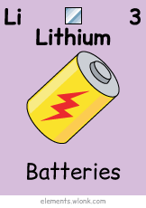
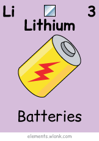

مرحبًا بك
هذا المشروع التعليمي يهدف إلى عرض الجدول الدوري للعناصر بشكل تفاعلي، مع إمكانية استعراض معلومات كل عنصر، بالإضافة إلى معرض صور
الجدول الدوري
الروذرفورديوم (Rf)
عنصر مشع اصطناعي، سُمي نسبة إلى العالم إرنست روذرفورد، ويستخدم في الأبحاث النووية.
إغلاقالروينجينيوم (Rg)
عنصر مشع، سُمي نسبة إلى فيلهلم رونتجن مكتشف الأشعة السينية، لا توجد له تطبيقات عملية.
إغلاقالأوغانيسون (Og)
غاز نبيل مشع، سُمي نسبة إلى العالم يوري أوغانيسيان، أحدث عنصر مكتشف حتى الآن.
إغلاقبعض الصور

 
